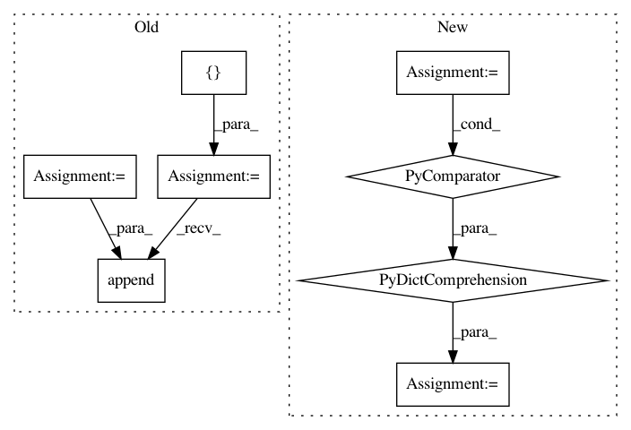

e4488b9b68416439a226b48b74c22ae84c129db1,magpie/api.py,,batch_test,#Any#Any#Any#Any#Any#Any#,148
Before Change
// Load the model
model = load_from_disk(model_path)
precision_list = []
recall_list = []
f1_list = []
if verbose:
print("Batches:", end=" ")
no_more_samples = False
batch_number = 0
while not no_more_samples:
batch_number += 1
batch = []
for i in xrange(batch_size):
try:
batch.append(doc_generator.next())
except StopIteration:
no_more_samples = True
break
X, answers, kw_vector = build_test_matrices(
batch,
model,
testset_path,
ontology,
)
// Predict
y_pred = model.scale_and_predict(X)
// Evaluate the results
precision, recall = evaluate_results(
y_pred,
kw_vector,
answers,
)
f1 = (2 * precision * recall) / (precision + recall)
precision_list.append(precision)
recall_list.append(recall)
f1_list.append(f1)
if verbose:
After Change
start_time = time.clock()
all_metrics = ["map", "mrr", "ndcg", "r_prec", "p_at_3", "p_at_5"]
metrics_agg = {m: [] for m in all_metrics}
if verbose:
print("Batches:", end=" ")
no_more_samples = False
batch_number = 0
while not no_more_samples:
batch_number += 1
batch = []
for i in xrange(batch_size):
try:
batch.append(doc_generator.next())
except StopIteration:
no_more_samples = True
break
X, answers, kw_vector = build_test_matrices(
batch,
model,
testset_path,
ontology,
)
// Predict
y_pred = model.scale_and_predict_confidence(X)
// Evaluate the results
metrics = evaluate_results(
y_pred,
kw_vector,
answers,
)
for k, v in metrics.iteritems():
metrics_agg[k].append(v)
if verbose:
sys.stdout.write(b".")
sys.stdout.flush()
if verbose:
print()
print("Testing finished in: {0:.2f}s".format(time.clock() - start_time))
return {k: np.mean(v) for k, v in metrics_agg.iteritems()}
def train(
In pattern: SUPERPATTERN
Frequency: 4
Non-data size: 8
Instances
Project Name: inspirehep/magpie
Commit Name: e4488b9b68416439a226b48b74c22ae84c129db1
Time: 2016-02-10
Author: jan.stypka@cern.ch
File Name: magpie/api.py
Class Name:
Method Name: batch_test
Project Name: ray-project/ray
Commit Name: dc378a80b77685cc45c2b53e2f484ed9c6d8c44c
Time: 2020-08-26
Author: ian.rodney@gmail.com
File Name: python/ray/autoscaler/docker.py
Class Name:
Method Name: docker_start_cmds
Project Name: CyberReboot/NetworkML
Commit Name: b176e0bd89a243e36cc4db02735aaf896c3ca4a2
Time: 2020-01-30
Author: josh@vandervecken.com
File Name: networkml/featurizers/features.py
Class Name: Features
Method Name: get_columns
Project Name: GoogleCloudPlatform/PerfKitBenchmarker
Commit Name: 225d31587eeb9aca226158e346c8e9730777913c
Time: 2017-02-24
Author: nlavine@google.com
File Name: perfkitbenchmarker/publisher.py
Class Name:
Method Name: RepublishJSONSamples